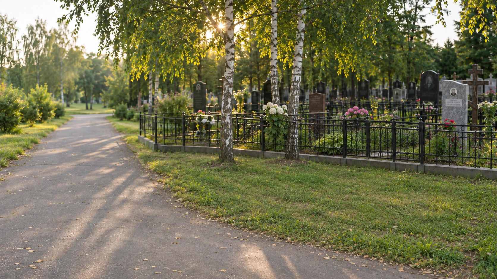
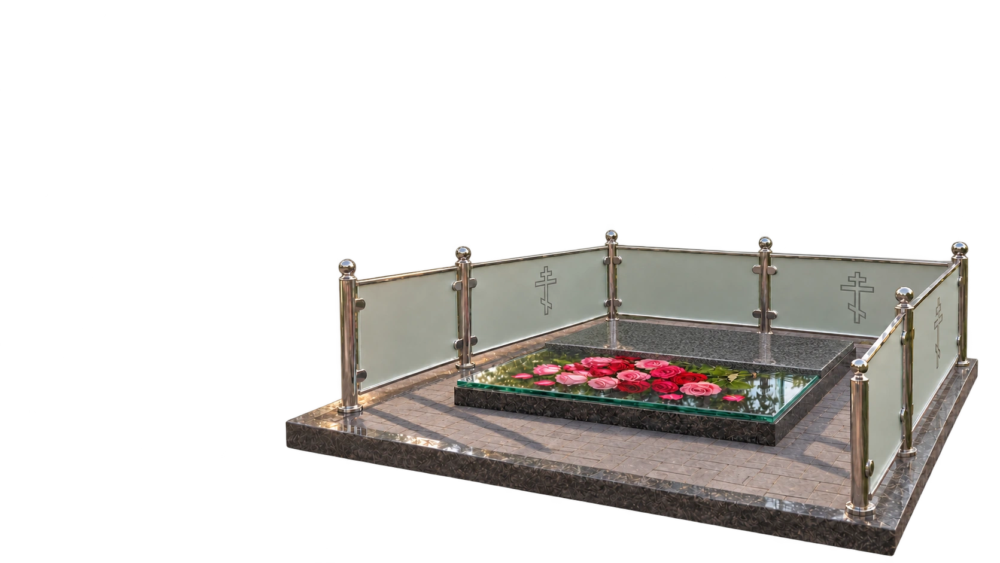
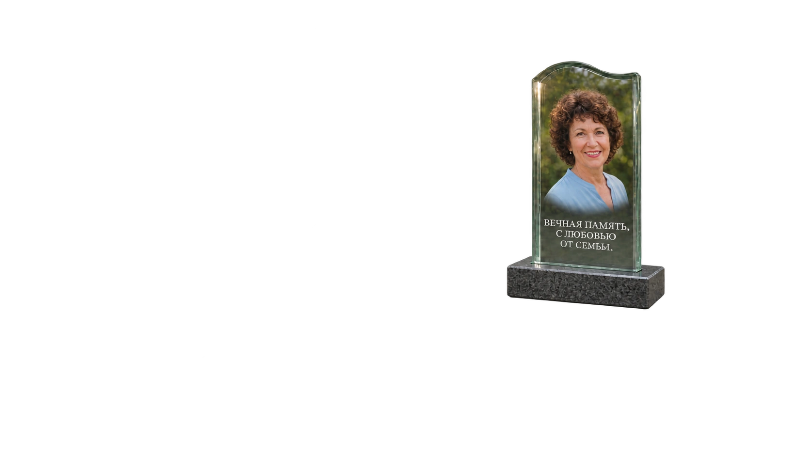
GLASS-MEMORY · СТЕКЛО И МЕТАЛЛ
Светлая память.В стекле.
Памятники, портреты и стеклянные цветники с керамической печатью. Форма и оформление — под вашу идею.
Керамическая печать
20+ лет без выцветания
Ультрапрочный
Закалённое стекло. Триплекс.
Форма на выбор
Прямоугольник, овал, арка или форма по эскизу
Двусторонняя печать
Для оформления с двух сторон
01 / ВЫБЕРИТЕ, С ЧЕГО НАЧАТЬ
Выберите изделиеи оформление.
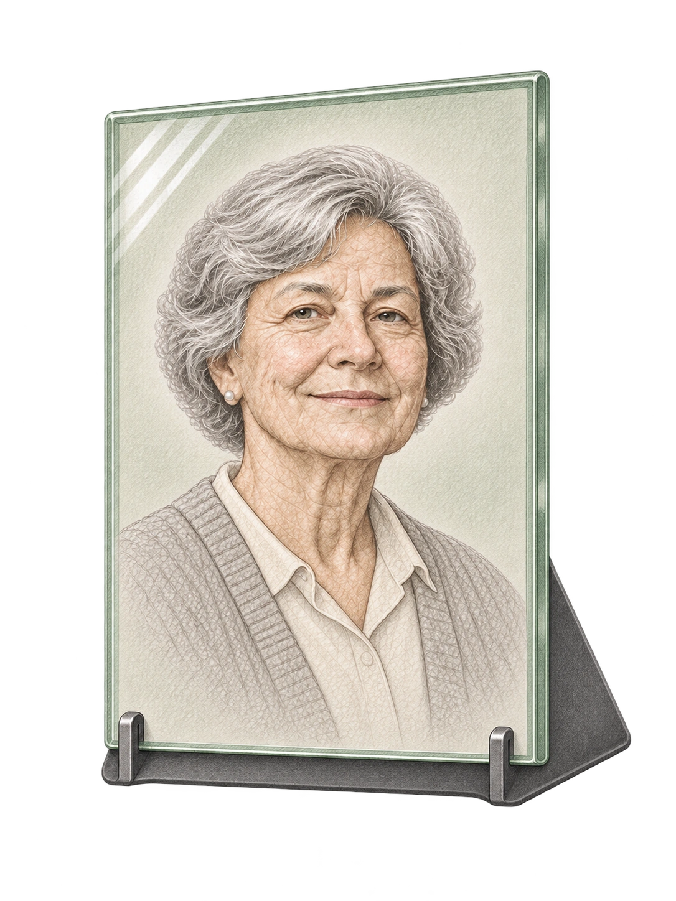
Отдельный портрет
Керамическая печать на стекле: форма и оформление под вашу идею.
Печать и оформление
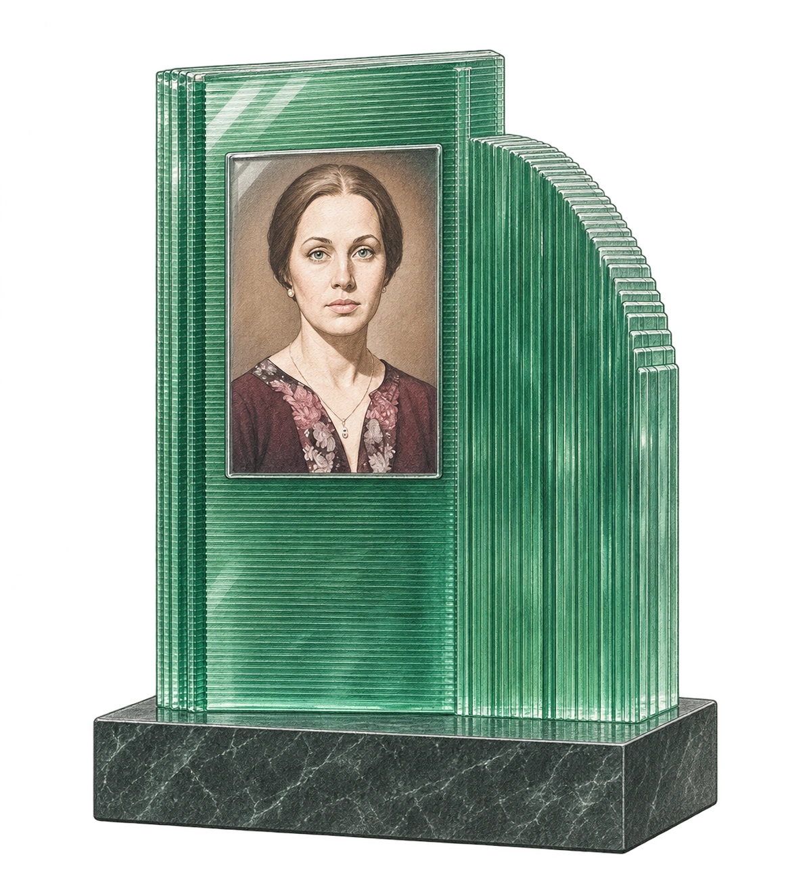
Наборное стекло
Объёмные памятники из стеклянных элементов на УФ-склейке.
Посмотреть варианты
Композиция в одном стиле
Памятник, стеклянный цветник, ограда и детали оформления — под вашу идею.
Посмотреть готовые решения →
02 / ВАРИАНТЫ ПАМЯТНИКОВ
Памятники и стелы
Триплекс, наборное стекло и металл — выберите конструкцию и форму.
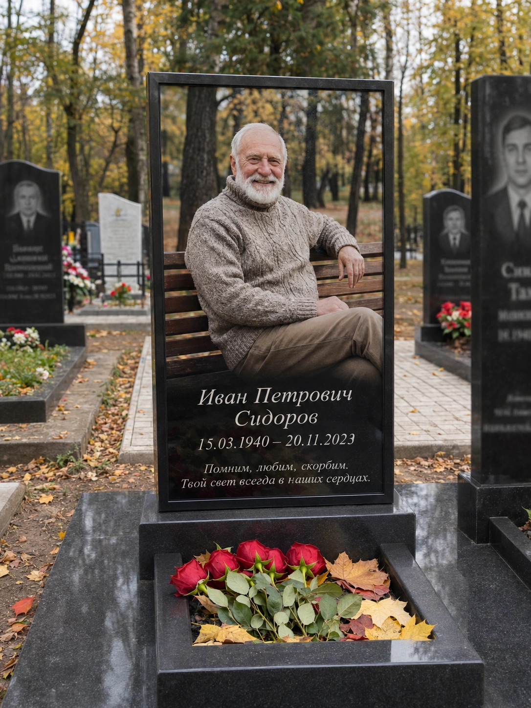
Портрет в металлической раме
Стеклянный портрет в раме из профильной трубы.
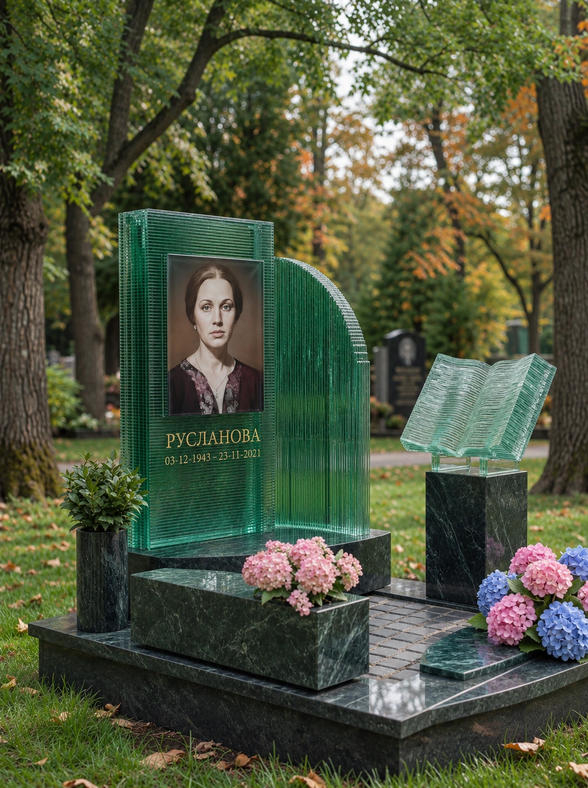
Наборное стекло
Памятник из стеклянных элементов на УФ-склейке.
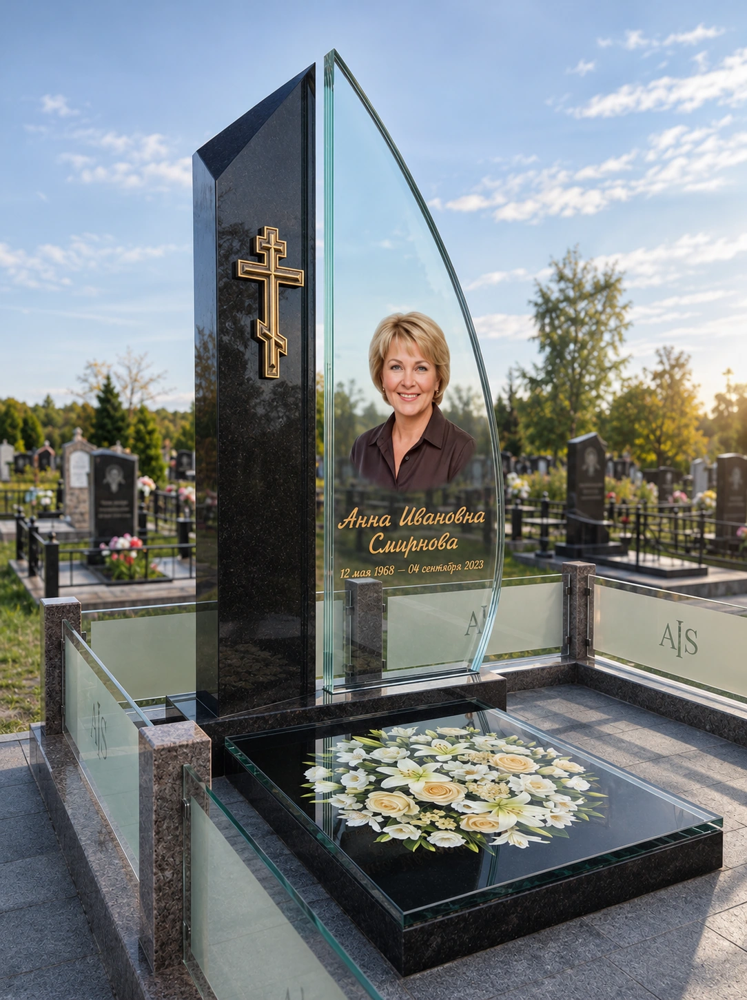
Фигурный триплекс
Стела из многослойного стекла в сочетании с камнем.
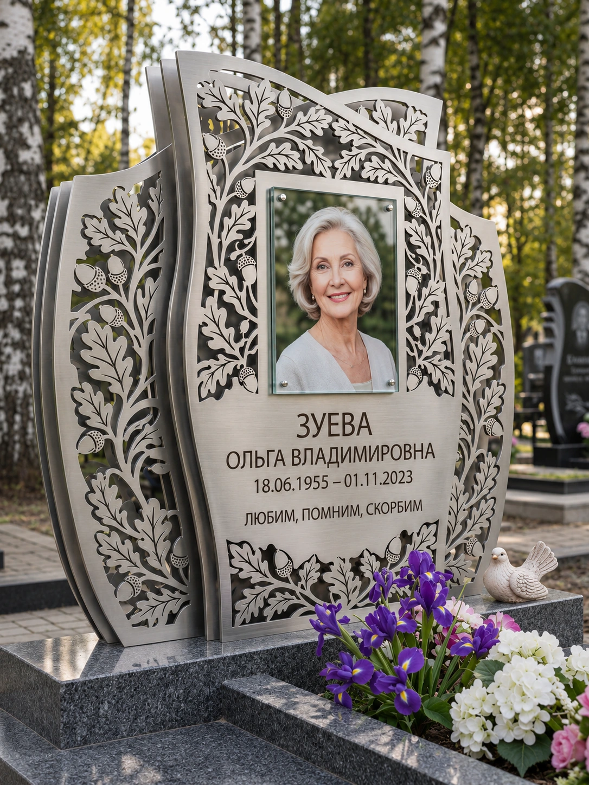
Металл с лазерной резкой
Стальная стела с прорезным декором и стеклянным портретом.
03 / ГОТОВЫЕ РЕШЕНИЯ
Памятник и оформление.В едином стиле.
К памятнику можно добавить стеклянный цветник и ограждение. Состав и оформление подбираем отдельно.
Стекло и камень
Фигурная стела, каменное основание и стеклянная накладка на цветник.
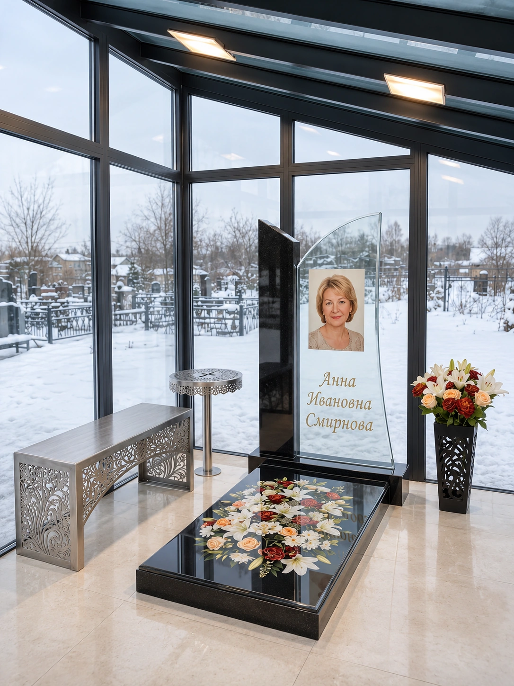
Комплекс с остеклением
Стела, цветник и ограждение как части общей композиции.
04 / СТЕКЛЯННЫЕ ЦВЕТНИКИ
Цветы, которыесохраняют цвет.
Стеклянная накладка на цветник
Керамическая печать по всей площади. Форма накладки — под размеры и контур цветника.
Закалённое стекло и стойкий цвет
Крепление через отверстия или по периметру на клей. Для ухода достаточно убрать мусор и протереть поверхность.
Подобрать цветник05 / ОГРАЖДЕНИЯ
Стекло и металл.Оформление границ.
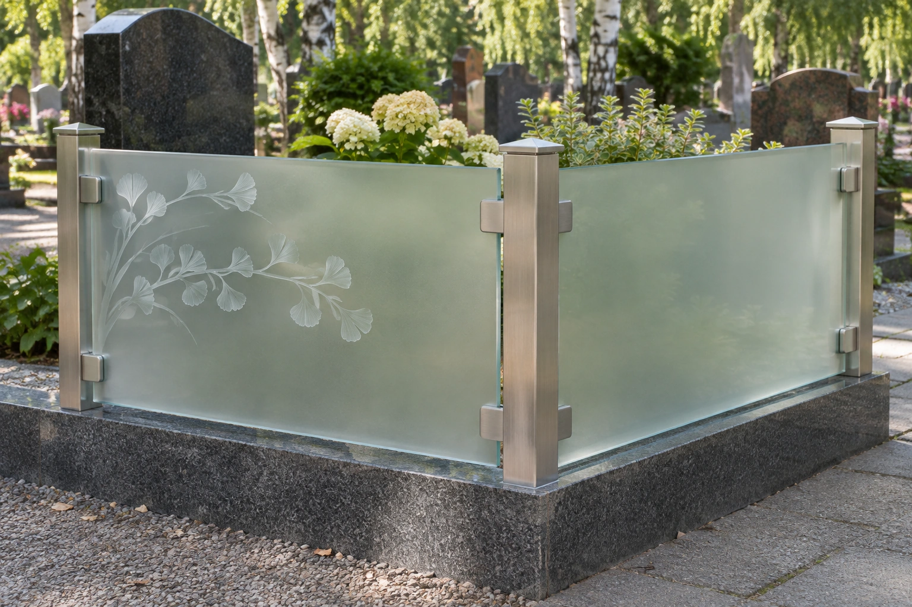
Стеклянные ограждения
Закалённое стекло на столбиках из нержавеющей стали или гранита. Декор — цветная или белая печать, пескоструйное нанесение.
Металлические ограждения
Стальные оградки с лазерной резкой по профильной трубе и листу. Размеры и рисунок подбираем под участок.
Подобрать ограждение06 / КЕРАМИЧЕСКАЯ ПЕЧАТЬ
Портрет в цвете.Память на годы.
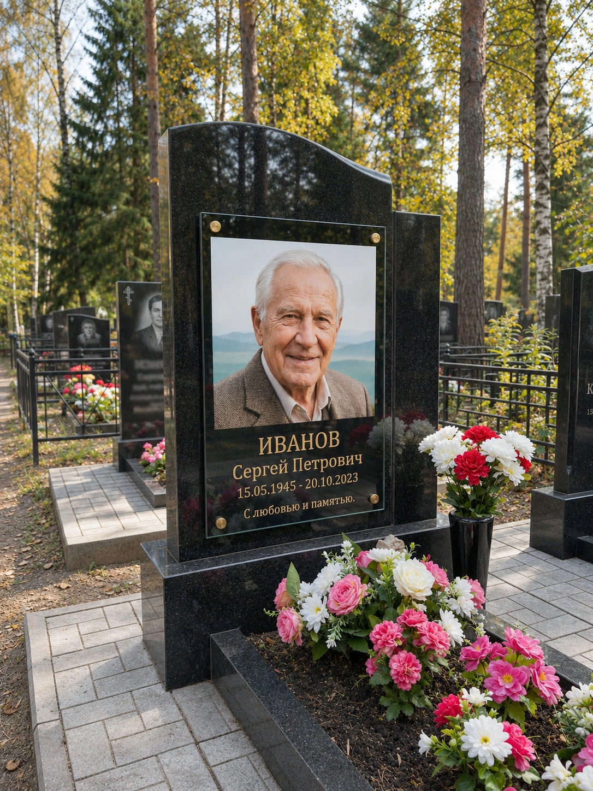
Цвет сохраняется
Керамическая печать сохраняет цвет 20+ лет. Изображение устойчиво к погодным условиям и царапинам.
Фон не мешает портрету
Белая подложка закрывает фон камня за портретом и делает цвета насыщеннее.
Форма под ваш замысел
Единое стекло или триплекс, отдельный портрет или стела. Возможна двусторонняя печать.
Почему это работает
При обжиге 600 °C керамические чернила спекаются со стеклом. Изображение становится частью его поверхности.
07 / КРЕПЛЕНИЕ К ПАМЯТНИКУ
Три способа.Один продуманный выбор.
Способ установки зависит от конструкции памятника, толщины стекла и желаемого вида.
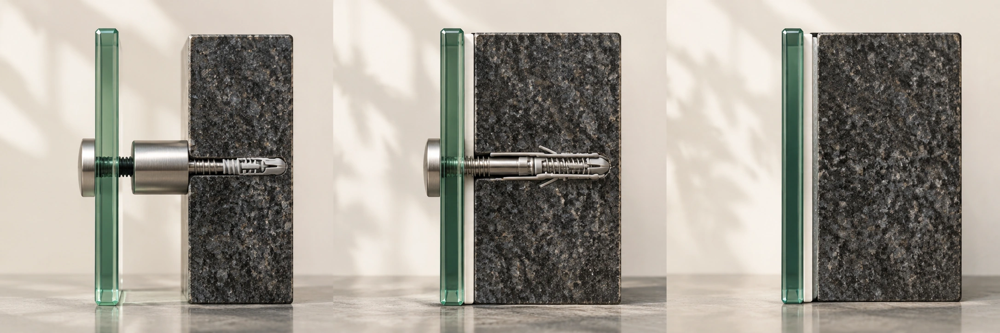
01
На расстоянии от камня
Дистанционный крепёж: стекло отходит от камня на 15 мм. Между портретом и гранитом появляется объём.
02
Вплотную к камню
Стекло плотно прилегает к памятнику. Белая подложка скрывает фон камня.
03
На клей-герметик
Без сверления стекла. Белая подложка обязательна. Состав и основание нужно согласовать.
08 / РАМЫ И ПОДСТАВКИ
Стекло или металл.Опора для вашего портрета.
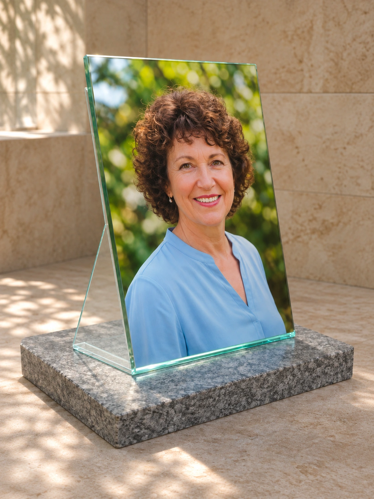
Стеклянная подставка
Прозрачная стеклянная опора для портрета. Размер и способ фиксации подбираем под изделие.
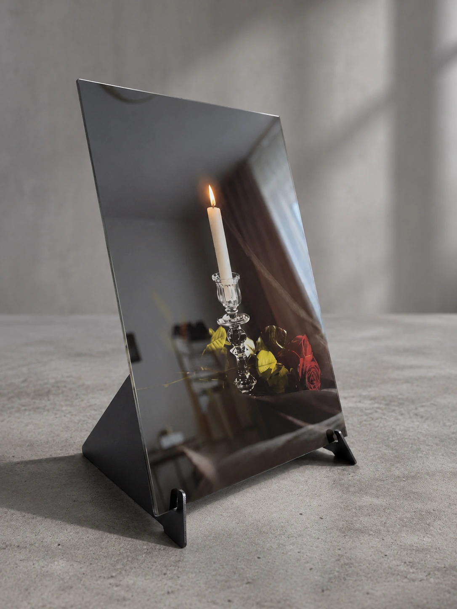
Металлическая подставка
Металл 4 мм. Для стекла 8–13 мм. Сталь с порошковой окраской или матовая нержавеющая сталь.
Подобрать подставку
Подберём опору под ваш портрет
Стеклянная подставка, металлическая опора или рама — под размеры изделия и способ установки.
09 / КОНСТРУКЦИЯ СТЕКЛА
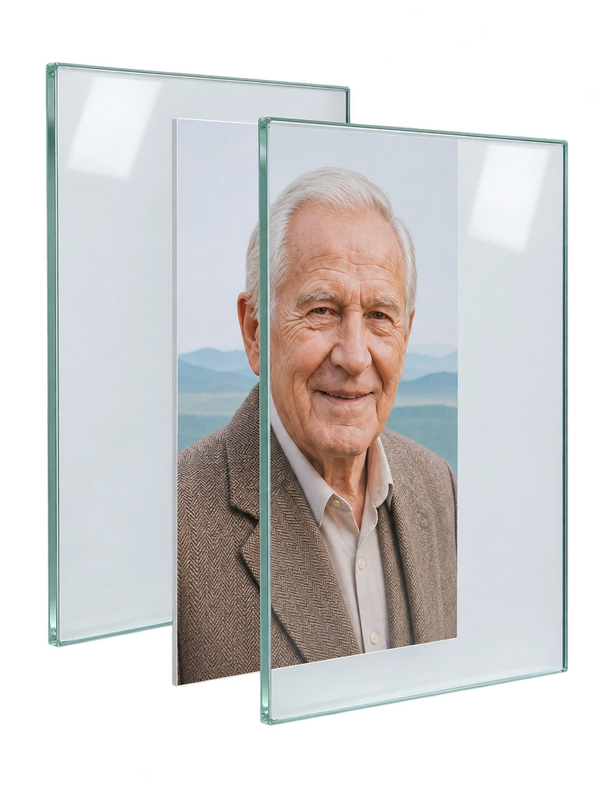
За прозрачностью —
многослойная
конструкция.
Два или более слоя стекла соединены полимерной плёнкой, которая удерживает осколки при разрушении. Керамическую печать наносят на стекло; белая подложка отделяет изображение от фона.
10 / ОТ ИДЕИ К ИЗДЕЛИЮ
Начнём с вашей идеи.Детали согласуем вместе.
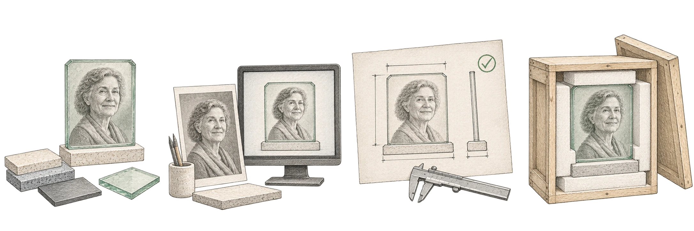
01
Выбор
Изделие, форма и известные размеры. Можно начать без готового эскиза.
02
Оформление
Изображение, стекло, подложка и способ крепления.
03
Согласование
Макет, состав заказа, стоимость и сроки до изготовления.
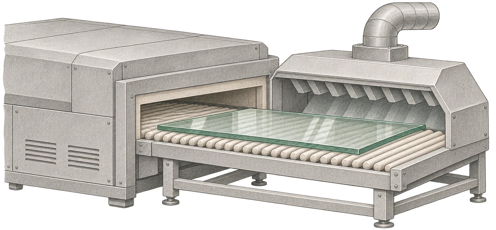
04
Изготовление
Изготавливаем стекло и металл по согласованному макету. Проверяем качество изделия.
05
Получение
Упаковка, перевозка и монтаж обсуждаются отдельно.
Изготовление — 30 календарных дней после утверждения макета. Мемориальные комплексы — 45–90 дней, в зависимости от состава и сложности.
11 / ПЕРЕД ВЫБОРОМ
Коротко о важном.
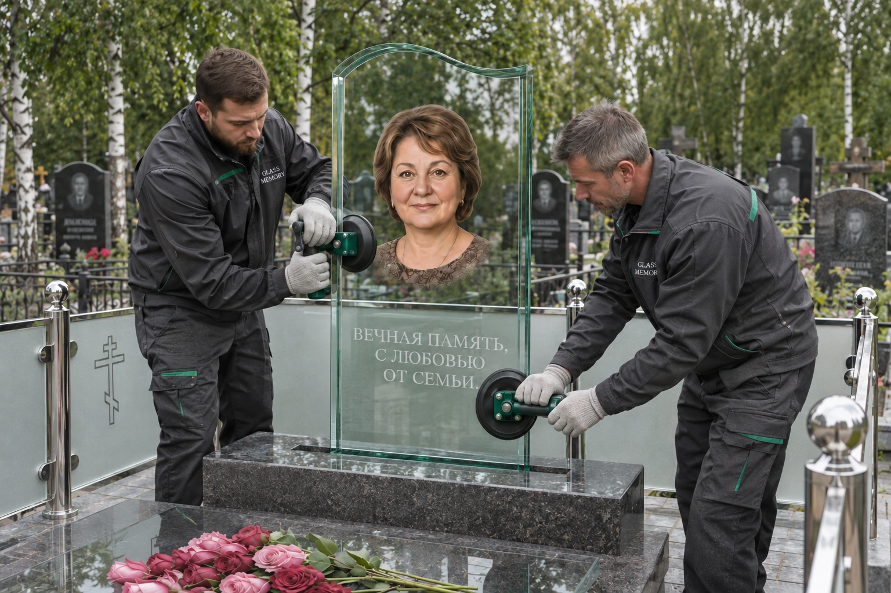
Установка в паз каменного основания
Можно сохранить существующий памятник?
Стеклянная реставрационная накладка позволяет обновить существующий памятник. Возможность установки зависит от состояния камня и выбранного крепления. Для оформления нужен цифровой файл.
От чего зависит стоимость?
От изделия, формы, размеров, стекла, печати и крепления. Стоимость, перевозку и монтаж согласуют по составу заказа.
Как долго сохраняется цвет?
Керамическая печать сохраняет цвет 20+ лет. Срок и условия гарантии уточняются при согласовании заказа.
Нужно ли сразу присылать портрет?
Начать обсуждение можно без фотографии. Цифровой файл потребуется на этапе подготовки изображения.
12 / ВАШЕ РЕШЕНИЕ
Память —
в деталях.
Начнём с вашей идеи.
Обсудим форму, изображение и крепление. Фото и размеры можно добавить позже.
ВАШ ЗАПРОС
Запрос подготовлен.
Проверьте детали и сохраните запрос, чтобы передать его при обращении.
Данные не отправлены. Запрос хранится только на этой странице.